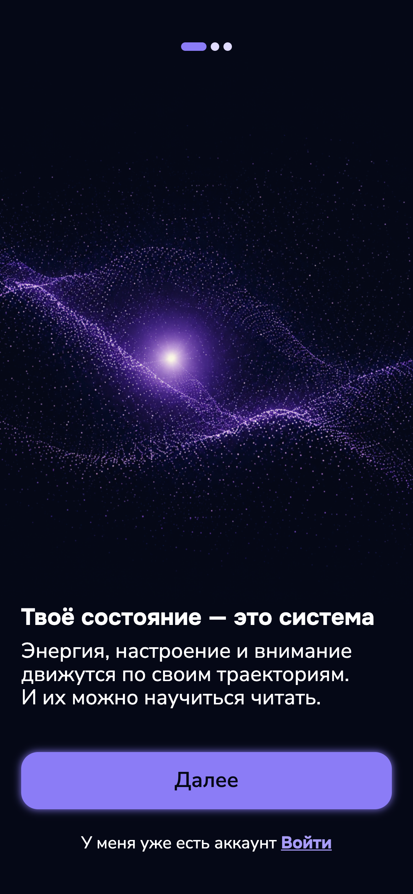

Soma · A case study in product designVol. 1 — 2026Anastasiia Kokyrtsa
Reading the body
as a system
Abstract
People feel tired, flat or restless and can’t tell why. Soma reads sleep, mood, the menstrual cycle and lunar phases together and explains the day — without guilt, without clinical charts, without asking too much up front.1
1Based on 4 personas and a 7-stage customer journey map. Barriers found: tools felt either “too esoteric” or “too clinical”.

Fig. 1aOnboarding opens with an idea, not a form.

Fig. 1bHome: today’s state in one read.

Fig. 1cTwo-minute practice, chosen by state.